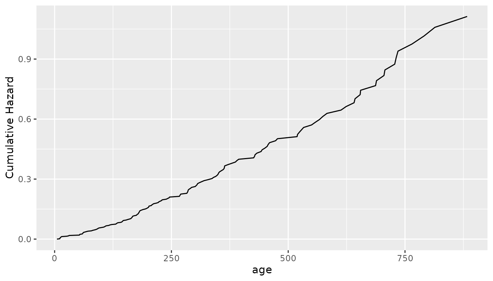
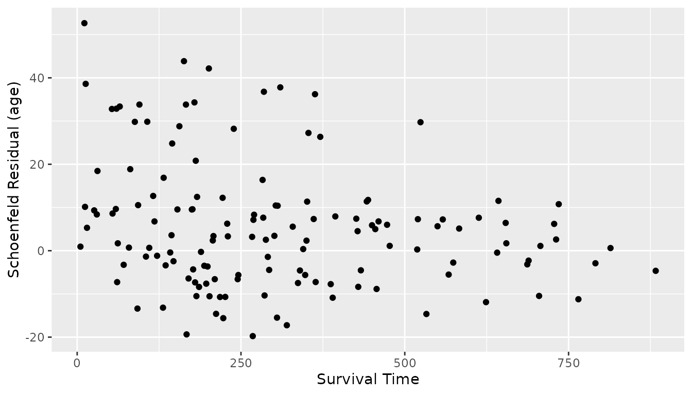

Functions for Plotting and Analysis
Source:vignettes/Plotting_And_Analysis.Rmd
Plotting_And_Analysis.RmdExample Setup
We will use analysis of the lung dataset in the survival package to visualize the different plotting methods available in Colossus.
data(cancer, package = "survival")
df <- cancer
df$UserID <- seq_len(nrow(df))
df$status <- df$status - 1
df$sex <- df$sex - 1
t0 <- "%trunc%"
t1 <- "time"
event <- "status"
names <- c("age", "sex")
tform <- c("loglin", "loglin")
control <- list("Ncores" = 1, "maxiter" = 2, "verbose" = 2)
a_n <- c(0.01701289, -0.51256478)
term_n <- c(0, 0)
keep_constant <- c(0, 0)
modelform <- "M"Survival Function Approximation
After fitting a Cox proportional hazards model, one may be interested in what the baseline survival rate is. One method of doing so is by weighting the number of events at each event time by the total risk. In the absence of excess risk, the hazard at any point in time is equal to the event rate and the hazard ratio of every row is equal to one, so this assumption holds for the case with negligible excess risk.
Suppose every row at risk at a time was twice as likely to experience an event than the baseline. Then we would expect there to be twice as many events as there would be at baseline. The same logic applies to the case with every row at risk being half as likely. This generalizes to any average risk. Colossus allows the instantaneous hazard to be approximated for both stratified and non-stratified models.
Once the instantaneous hazard is approximated, the cumulative hazard can be approximated. Then the surviving fraction is approximately equal to the exponential of the negative cumulative hazard at each event time.
plot_options <- list(
"type" = c("surv", paste(tempfile(), "run", sep = "")), "studyid" = "UserID",
"verbose" = 2, "surv_curv" = T, "martingale" = F, "strat_haz" = F, "km" = F
)
e <- RunCoxPlots(
df, t0, t1, event, names, term_n, tform, keep_constant, a_n, modelform,
control = control, plot_options = plot_options
)
norm_surv <- e[["standard"]]
g <- ggplot2::ggplot(norm_surv, ggplot2::aes(x = .data$t, y = .data$h)) +
ggplot2::geom_point(color = "black") +
ggplot2::labs(x = "age", y = "Instantaneous Hazard")
g
g <- ggplot2::ggplot(norm_surv, ggplot2::aes(x = .data$t, y = .data$ch)) +
ggplot2::geom_line(color = "black", alpha = 1) +
ggplot2::labs(x = "age", y = "Cumulative Hazard")
g
g <- ggplot2::ggplot(norm_surv, ggplot2::aes(x = .data$t, y = .data$surv)) +
ggplot2::geom_line(color = "black", alpha = 1) +
ggplot2::labs(x = "age", y = "Surviving Fraction")
g
plot_options <- list(
"type" = c("surv", paste(tempfile(), "run", sep = "")), "studyid" = "UserID",
"verbose" = 2, "surv_curv" = F, "martingale" = F, "strat_haz" = F, "km" = T
)
e <- RunCoxPlots(
df, t0, t1, event, names, term_n, tform, keep_constant, a_n, modelform,
control = control, plot_options = plot_options
)
km <- e[["kaplin-meier"]]
g <- ggplot2::ggplot(km, ggplot2::aes(x = .data$t_t, y = .data$n_t)) +
ggplot2::geom_line(color = "black", alpha = 1) +
ggplot2::labs(x = "age", y = "KM Survival")
g
Cox Proportional Hazards model assumptions
The Cox proportional hazards model by definition assumes proportional hazards independent of time. If this is violated, then the results of a regression may be misleading. There are two checks that Colossus provides that can be used to test this assumption, the Schoenfeld residuals and Martingale residuals. In both cases, the premise is that if the hazard ratio were independent of time, then the residuals should also be independent of time.
Schoenfeld Residuals
Schoenfeld residuals compare the average covariate value of rows with events with the risk-weighted average of the covariate in rows at risk. Consistently high or low residuals may be due to the hazard being much higher or lower than the model predicts. If these residuals are also correlated with event time, then the hazard ratio may be dependent on event time. There is also the option to scale the residuals by the standard deviation.
plot_options <- list(
"type" = c("schoenfeld", paste(tempfile(), "run", sep = "")),
"studyid" = "UserID", "verbose" = 2
)
res_all <- RunCoxPlots(
df, t0, t1, event, names, term_n, tform, keep_constant, a_n,
modelform,
control = control, plot_options = plot_options
)
res_age <- res_all[["age"]]
g <- ggplot2::ggplot(res_age, ggplot2::aes(x = .data$time, y = .data$y)) +
ggplot2::geom_point(color = "black") +
ggplot2::labs(
x = paste("Survival Time", sep = ""),
y = paste("Schoenfeld Residual (age)", sep = " ")
)
g
g <- ggplot2::ggplot(res_age, ggplot2::aes(x = .data$time, y = .data$y_scale)) +
ggplot2::geom_point(color = "black") +
ggplot2::labs(
x = paste("Survival Time", sep = ""),
y = paste("Schoenfeld Residual Scaled (age)", sep = " ")
)
g
res_sex <- res_all[["sex"]]
g <- ggplot2::ggplot(res_sex, ggplot2::aes(x = .data$time, y = .data$y)) +
ggplot2::geom_point(color = "black") +
ggplot2::labs(
x = paste("Survival Time", sep = ""),
y = paste("Schoenfeld Residual (sex)", sep = " ")
)
g
g <- ggplot2::ggplot(res_sex, ggplot2::aes(x = .data$time, y = .data$y_scale)) +
ggplot2::geom_point(color = "black") +
ggplot2::labs(
x = paste("Survival Time", sep = ""),
y = paste("Schoenfeld Residual Scaled (sex)", sep = " ")
)
g
Martingale Residuals
Martingale residuals compare the event status and cumulative hazard for each subject. The residual is bound in the open interval . Negative residuals correspond with subjects that survive despite high cumulative hazard and residuals near unity correspond with subjects that experienced an event despite low cumulative hazard. The distribution of residuals with event time can indicate if the model is over-predicting or under-predicting dependent on time.
plot_options <- list(
"type" = c("surv", paste(tempfile(), "run", sep = "")),
"studyid" = "UserID", "verbose" = 2, "surv_curv" = F,
"martingale" = T, "strat_haz" = F, "km" = F, "cov_cols" = c("age", "sex")
)
res_all <- RunCoxPlots(
df, t0, t1, event, names, term_n, tform, keep_constant, a_n,
modelform,
control = control, plot_options = plot_options
)
res_age <- res_all[["age"]]
g <- ggplot2::ggplot() +
ggplot2::geom_point(
data = res_age,
ggplot2::aes(x = .data$cov_max, y = .data$res_sum, group = .data$event, color = .data$event)
)
g <- g + ggplot2::labs(x = "Max Age", y = "Martingale Residuals")
g
res_sex <- res_all[["sex"]]
g <- ggplot2::ggplot() +
ggplot2::geom_point(
data = res_sex,
ggplot2::aes(x = .data$cov_max, y = .data$res_sum, group = .data$event, color = .data$event)
)
g <- g + ggplot2::labs(x = "Sex", y = "Martingale Residuals")
g
res_surv <- res_all[["survival_time"]]
g <- ggplot2::ggplot() +
ggplot2::geom_point(
data = res_surv,
ggplot2::aes(x = .data$time_max, y = .data$res_sum, group = .data$event, color = .data$event)
)
g <- g + ggplot2::labs(x = "Survival Time", y = "Martingale Residuals")
g
General Evaluation of Risk
Colossus also offers scripts that plot the relative risk by parameter value for each parameter in the model, assuming every other parameter is constant.
plot_options <- list(
"type" = c("risk", paste(tempfile(), "run", sep = "")), "studyid" = "UserID",
"verbose" = 2
)
res_all <- RunCoxPlots(
df, t0, t1, event, names, term_n, tform, keep_constant, a_n,
modelform,
control = control, plot_options = plot_options
)
res_age <- res_all[["age"]]
g <- ggplot2::ggplot(res_age, ggplot2::aes(x = .data$x, y = .data$y)) +
ggplot2::geom_line(color = "black") +
ggplot2::labs(x = "Age", y = "Relative Risk")
g
res_sex <- res_all[["sex"]]
g <- ggplot2::ggplot(res_sex, ggplot2::aes(x = .data$x, y = .data$y)) +
ggplot2::geom_point(color = "black") +
ggplot2::labs(x = "Sex", y = "Relative Risk")
g